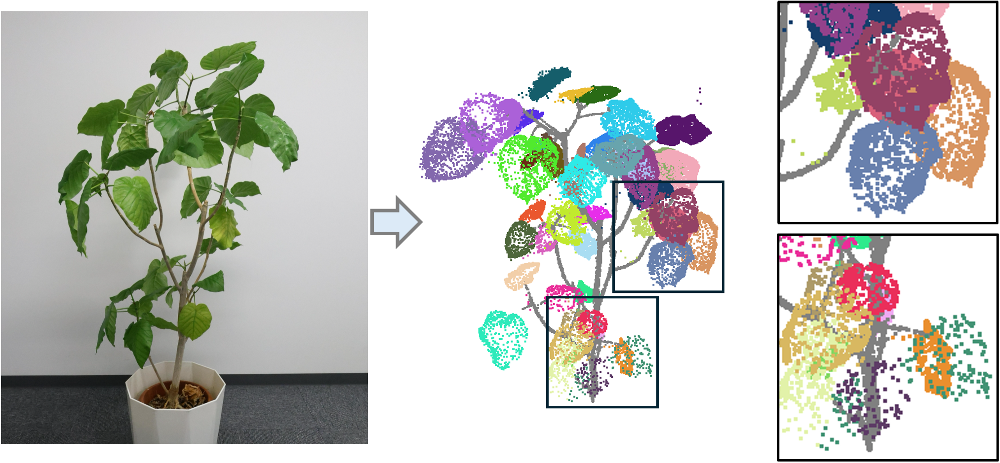

Publications
-

PlantSeg3D: Gaussian Plant Instance Segmentation with Geometry-aware Refinement
European Conference on Computer Vision (ECCV) 2026 CVPPA Workshop
@inproceedings{shimbo2026plantseg3d, title = {PlantSeg3D: Gaussian Plant Instance Segmentation with Geometry-aware Refinement}, author = {Shimbo, Hinano and Kuo, Meng-Yu Jennifer}, booktitle = {11th Workshop on Computer Vision in Plant Phenotyping and Agriculture}, year = {2026} }